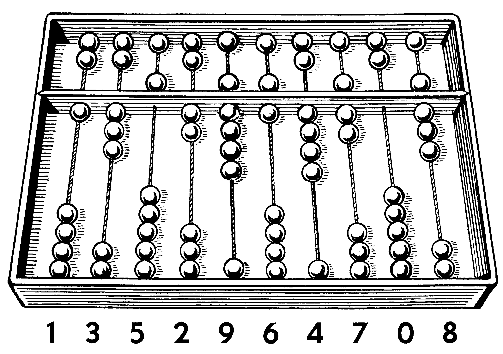

Computer Science - Perhaps not what you think?
Overview:
What image do these two words conjure in your mind: "computer" and "history"?
Perhaps if you're like me,
you think back to your family's first Hewlett-Packard
Personal Computer. A clunky, heavy, slow, noisy machine - but nonetheless state-of-the-art for its time?
Perhaps you really know your technology and can
list out facts about the first Macintosh, or even ENIAC? Similarly, you probably know about the term
"debugging" having to do with bugs shorting out vacuum tubes,
long before the transistor was invented. For most people, this is what they know about computers.
However, as Computer Scientists we ougt to know much more about
the history of computing and the gradual process of iterative design that has brought us to where we are
today.
The First Computer:
The "classical" definition of computer is: an information machine, a data processor, a problem solver, an automation tool. For thousands of years, humans have been in search of tools to make difficult work easier. It's no secret that humans are generally bad at math, which is indeed one of the first instances we see where a "computer" was invented. Meet the abacus, a handy Babalonian device with beads that made counting easier in an era when not even paper, nor pencil, nor eraser yet existed. Imagine yourself as a shop keeper and the novelty of owning an abacus; you no longer need to scratch notes in the dirt or on wet clay in order to keep track of sales and purchases. Perhaps today we take the abacus for granted, but it was nonetheless a critical development in computer science as we'll see below.
In case you didn't know, Mathematics and Computer Science are very closely linked. The abacus was significant because it was a small but crucial component in changing our understanding of mathematics. As a result, the ground work was done for our future generations, once technology caught up. The humble abacus contributed:
- Enhanced calculation abilities - multiplication, accurate handling of large sums.
- Mathematical bases - If the abacus has 10 beads, I've suddenly invented "base 10" arithmetic.
- Algorithmic thinking - I can follow a process, moving the beads along as I follow a process
- Debugging - I can retrace my steps more easily
- Innovation - I can be inspired to design a better abacus

If you explore modern computing, you'll find that entire CPU processors can be decomposed to series of gates and latches which hold electrical charges representing zeros and ones. Hence, this is in fact a binary arithmetic system. Essentially, rows of beads have been replaced by silicon and electricity, but the basic idea still bears resemblance to the humble abacus. Below I show a very simple adder circuit, complete with animations to represent the beads, just to drive the point home.
Other Early Computers:
More photos of these intersting devices.